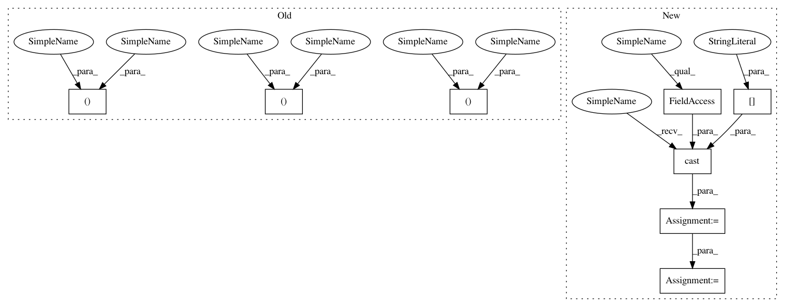

4531caf18d524196c3e8fab65ad65dc5bd9533ad,niftynet/application/segmentation_application.py,SegmentationApplication,connect_data_and_network,#SegmentationApplication#Any#Any#,236
Before Change
if self.is_training:
if self.action_param.validation_every_n > 0:
data_dict, net_out = tf.cond(tf.logical_not(self.is_validation),
lambda: data_net(True),
lambda: data_net(False))
else:
data_dict, net_out = data_net(True)
with tf.name_scope("Optimiser"):
optimiser_class = OptimiserFactory.create(
name=self.action_param.optimiser)
self.optimiser = optimiser_class.get_instance(
learning_rate=self.action_param.lr)
loss_func = LossFunction(
n_class=self.segmentation_param.num_classes,
loss_type=self.action_param.loss_type)
data_loss = loss_func(
prediction=net_out,
ground_truth=data_dict.get("label", None),
weight_map=data_dict.get("weight", None))
reg_losses = tf.get_collection(
tf.GraphKeys.REGULARIZATION_LOSSES)
if self.net_param.decay > 0.0 and reg_losses:
reg_loss = tf.reduce_mean(
[tf.reduce_mean(reg_loss) for reg_loss in reg_losses])
loss = data_loss + reg_loss
else:
loss = data_loss
grads = self.optimiser.compute_gradients(loss)
// collecting gradients variables
gradients_collector.add_to_collection([grads])
// collecting output variables
outputs_collector.add_to_collection(
var=data_loss, name="dice_loss",
average_over_devices=False, collection=CONSOLE)
outputs_collector.add_to_collection(
var=data_loss, name="dice_loss",
average_over_devices=True, summary_type="scalar",
collection=TF_SUMMARIES)
else:
// converting logits into final output for
// classification probabilities or argmax classification labels
data_dict, net_out = data_net(for_training=False)
output_prob = self.segmentation_param.output_prob
num_classes = self.segmentation_param.num_classes
if output_prob and num_classes > 1:
After Change
// converting logits into final output for
// classification probabilities or argmax classification labels
data_dict = switch_sampler(for_training=False)
image = tf.cast(data_dict["image"], tf.float32)
net_out = self.net(image, is_training=self.is_training)
output_prob = self.segmentation_param.output_prob
num_classes = self.segmentation_param.num_classes
if output_prob and num_classes > 1:
In pattern: SUPERPATTERN
Frequency: 3
Non-data size: 8
Instances
Project Name: NifTK/NiftyNet
Commit Name: 4531caf18d524196c3e8fab65ad65dc5bd9533ad
Time: 2017-11-16
Author: wenqi.li@ucl.ac.uk
File Name: niftynet/application/segmentation_application.py
Class Name: SegmentationApplication
Method Name: connect_data_and_network
Project Name: NifTK/NiftyNet
Commit Name: 4531caf18d524196c3e8fab65ad65dc5bd9533ad
Time: 2017-11-16
Author: wenqi.li@ucl.ac.uk
File Name: niftynet/application/segmentation_application.py
Class Name: SegmentationApplication
Method Name: connect_data_and_network
Project Name: NifTK/NiftyNet
Commit Name: 4531caf18d524196c3e8fab65ad65dc5bd9533ad
Time: 2017-11-16
Author: wenqi.li@ucl.ac.uk
File Name: demos/BRATS17/brats_segmentation.py
Class Name: BRATSApp
Method Name: connect_data_and_network
Project Name: NifTK/NiftyNet
Commit Name: 4531caf18d524196c3e8fab65ad65dc5bd9533ad
Time: 2017-11-16
Author: wenqi.li@ucl.ac.uk
File Name: niftynet/application/regression_application.py
Class Name: RegressionApplication
Method Name: connect_data_and_network